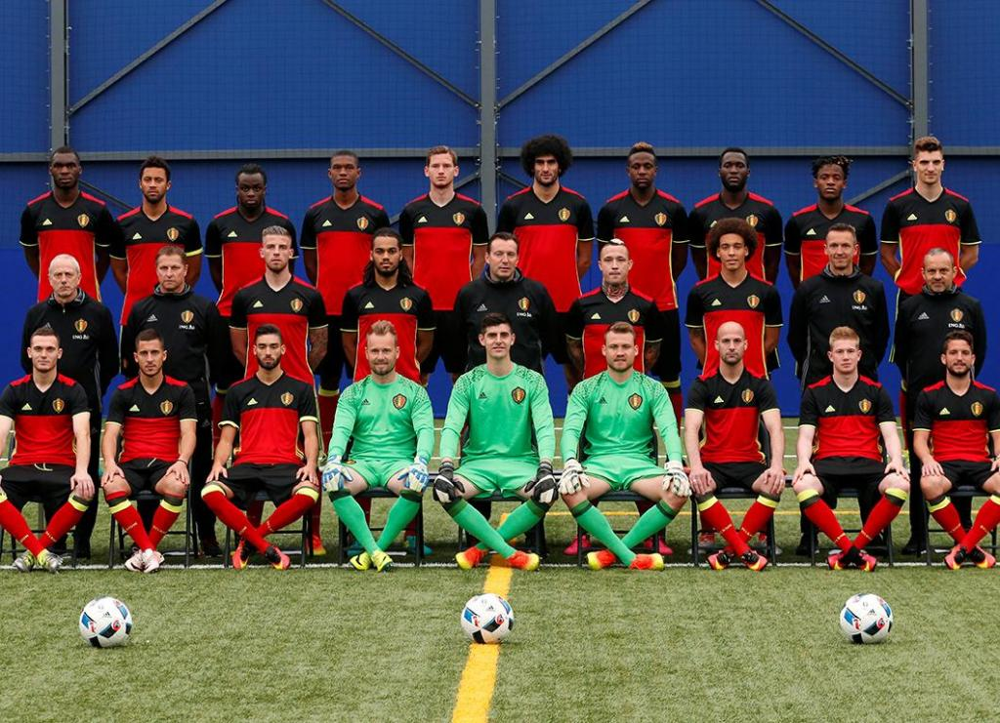

TÍTULOS
A Bélgica ainda não conquistou nenhum título na Eurocopa. O melhor desempenho da seleção belga foi alcançar a final em 1980, na Itália, onde foram derrotados pela Alemanha Ocidental por 2-1. A Bélgica também alcançou as semifinais em 1972 e 2016, mas ainda não conseguiu vencer o torneio.